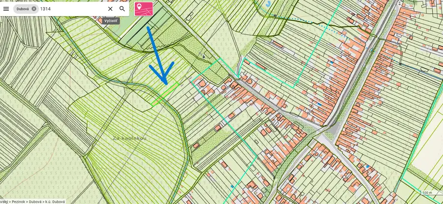

Dubová 950m2, 97000€ (102€/m2)
Dubová

- Plocha950 m²
O nehnuteľnosti
NA PREDAJ – INVESTIČNÝ POZEMOK, DUBOVÁ, OKRES PEZINOKPoverení vlastníkom ponúkame na predaj perspektívny investičný pozemok v obci Dubová, okres Pezinok, v rozvojovej lokalite pripravovanej na budúcu výstavbu.Základné údajeParcela registra E: 1314Katastrálne územie: DubováVýmera: 950 m²Cena: 97 000 €Cena za m²: približne 102 €/m²GPS: 48.365325°, 17.332422°Územie sa aktívne pripravujeIde o investičný pozemok, ktorý nie je určený pre záujemcu požadujúceho okamžitú výstavbu rodinného domu.Územie sa v súčasnosti spracováva. Urbanistické štúdie sú už vypracované a pripravujú sa pozemkové úpravy. Následne bude potrebné pokračovať v príprave územia a potrebnej infraštruktúry.Pozemok je preto vhodný predovšetkým pre klienta, ktorý hľadá strednodobú až dlhodobejšiu investíciu a môže si na dokončenie prípravy územia počkať.Zaujímavý investičný potenciálSúčasná cena pozemku predstavuje približne 102 €/m².Pre porovnanie, pripravené pozemky s inžinierskymi sieťami sa v lokalite Dubová objavujú približne na úrovni 180 – 200 €/m², pričom konkrétna cena závisí od polohy, prístupu, sietí a pripravenosti na výstavbu.Rozdiel medzi dnešnou cenou a cenami pripravených pozemkov s IS predstavuje zaujímavý potenciál do budúcnosti. Výhodyvýmera až 950 m²cena približne 102 €/m²štúdie sú už hotovépripravujú sa pozemkové úpravyperspektívna rozvojová lokalitavhodné ako investícia pre klienta, ktorý nepotrebuje okamžite stavaťzaujímavý cenový rozdiel oproti pripraveným pozemkom s ISPoloha pozemku GPS súradnice:48.365325°, 17.332422° Mapový pohľad – Google Maps:https://www.google.com/maps/place/48%C2%B021'55.2%22N+17%C2%B019'56.7%22E/@48.3649096,17.332088,439m/data=!3m1!1e3!4m4!3m3!8m2!3d48.365325!4d17.332422Rád Vám pošlem všetky dostupné podklady, mapy a ďalšie informácie k pozemku.KontaktIng. Erich Junger 0903 173 042 junger68@gmail.comKomplexnú ponuku investičných a stavebných pozemkov nájdete na www.lacne-pozemky.sk.
Parametre
- Druh
- Pozemok pre rodinné domy
- Dátum zverejnenia
- 18. 08. 2026
- Elektrina
- Nedostupné
- Funkčné využitie
- Výstavba rodinného domu
- Odpadové vody
- Nedostupné
- Plocha pozemku
- 950 m²
- Plyn
- Nedostupné
- Pripravenosť k výstavbe
- Schválené v územnom pláne
- Terén pozemku
- Rovinatý
- Typ
- Predaj
- Voda
- Nedostupné